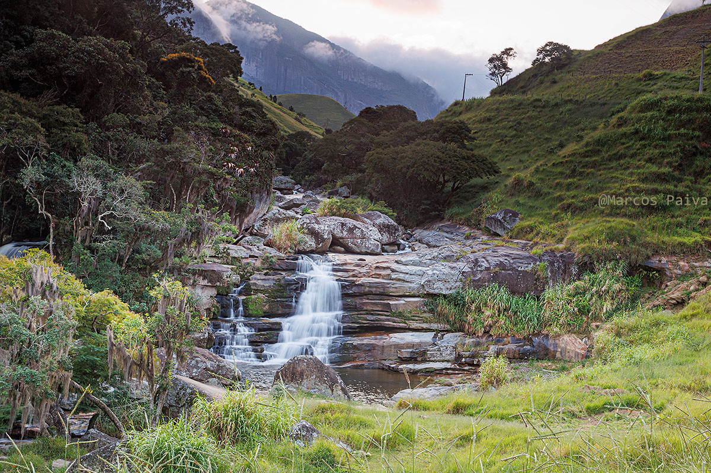

Cachoeira dos Frades
A Cachoeira dos Frades fica no município de Teresópolis escondida em meio as cadeias de montanhas do Parque Estadual dos Três Picos, muito comum em ser visitada por montanhistas. Já que ela é caminho para varias montanhas na região.
Para chegar nas Cachoeira dos Frades você deve se dirigir para a estrada Teresópolis-Friburgo (RJ-130) entrar no Km 20 e se dirigir até a cachoeira dos Frades por uma estrada de terra, até avistar uma porteira como podemos ver na foto abaixo.
A cachoeira fica em uma propriedade particular mas é liberada para as os visitantes, a porteira vive com cadeado, mas no lado esquerdo tem uma passagem para os visitantes, ao passar pelo porteira vai fazer uma descida no terreno de 3 minutos e vai estar no poço formado pela cachoeira.
